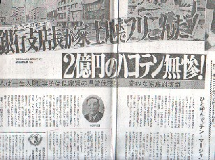

昭和４０年代、四国や関西方面で賭博性の強い点麻雀が流行した。賭博性は強いが、ルールはシンプルそのもの。いうなら偶数か奇数を当てるだけの丁半賭博の麻雀版。
ギャンブルともなれば、ルールはできるだけシンプルな方が良いに決まっている。そこで多くのサラリーマンがハマった。この麻雀で、会社の金に手を着けた。そこまで行かなくても家庭が崩壊したなどの騒動までおき、雑誌ネタにもなったくらい。

ではどれくらいシンプルかというと、なにせ手役としては、七対子と清一色しかない。そしてこの七対子、清一色以外の役との複合は一切みとめない。つまりただの七対子でも混一色の七対子でも、アガリ点はまったく同じなのだ。
そんな単純な麻雀、やっとられるかと思われるかも知れないが、金さえ賭かっていれば、どんなゲームでも目の色が変わる。それに手役は七対子と清一色しかない、とはいってもリーチはある。また無翻でもアガリ点が安いだけでアガリになるので、口でいうほど単純ではない。そしてなんと云っても、ドラの種類が多いのが特徴だ。
ルールはさまざまなバリエーションがあるが、次はその代表的な例。
持ち点２５本。
無翻アガリ可。無翻アガリはロンアガリ３本・ツモアガリ３本オール。
リーチアガリは一本増し。
ドラは１枚で１本。七対子10本。清一色25本。
ドラはサイコロの出目で決まる。たとえば出目が２と４なら数牌の２と４、および２と４を足した６がすべてドラとなる。４と６などで合計数が十であれば、４と６の他に字牌がすべてドラとなる。
プレーヤーの誰かがハコテンで終了。その時点でマイナス（25本未満）しているプレーヤーは５本の罰金。
清一色はもちろん、七対子だって毎回できるわけはない。そこでゲームはドラを抱えた１雀頭４メンツのアガリっこということになる。とにかくもう、何がなんでも早くアガった方が勝ちである。それもツモアガリなら、お山の大将だ。
サイコロの出目をすべてドラにするというのは、超インフレ。無責任なウワサによると、このようなルールをやり始めたのは自○党の代議士だというので、これを自○党ルールというそうだ。
しかしこの程度のインフレで驚いてはいけない。当時はこのチン麻雀をさらにインフレ化させた「バカ麻雀」というゲームも行われていたのだ。
チン麻雀のチンは「おしまい」とか「終わり」の意であるが、２億円振り込んだ支店長さんは、どうやらバカ麻雀でチンとなってしまったらしい。
|